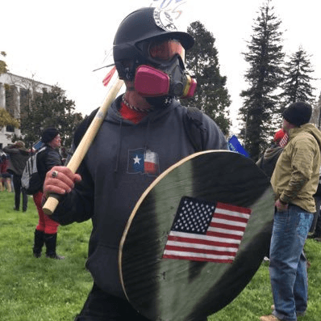

Davis was trained as a Historian at McMaster University, and as an Infantry soldier in the Canadian Forces. An author, strategist, Catholic medievalist, and an entrepreneur, his writing can be found at Stares at the World.


The recent success of the Fourth Battle of Berkeley is a palpable sign of the shift which is underway in Western politics. Since the election of Donald Trump, the peaceful men and women of the right have finally started standing up for themselves when leftist thugs try and disrupt their events through rioting and violence. While Return Of Kings continues to advocate for peaceful assembly rather than political violence, it’s become abundantly clear that the modern-day left has no respect for rule of law, and that police forces are frequently failing in their duty to maintain order.
Should you choose to exercise your right to free speech, it is becoming increasingly likely that you’ll be subjected to a violent onslaught by the home-grown terrorist organization known as Antifa. It is incumbent on you to prepare for this inevitability, so that you can protect yourself and others. The following ten points will help keep you safe, while ensuring that the Antifa thugs scatter into the winds.
It is absolutely critical that we maintain the moral and legal high-ground. This does not mean pulling your punches, or bending over whenever somebody whines about hurt feelings – but it does mean that we eschew the barbaric tactics which our leftist enemies embrace. This is the fight for civilization, and if we stoop to our enemy’s level then even if the battle is won, the war will be lost. Let them be the initiators, let them be the vandals; if you simply stand your ground, and maintain a confident composure, it is all but guaranteed that they will lash out.
Remember: these are the infantilized refuse of a collapsing civilization. There’s no need for you to initiate anything; the mere fact that you’re carrying yourself with confidence and giving voice to ‘hate facts’ will be more than enough to throw them into a frenzy.
From a legal standpoint, you have a right to defend yourself from assault: laws will vary from place to place, and in some areas you may be required to respond with proportionate force, but when we’re discussing a group of lunatics who are hurling bricks and throwing M-80s, it would be reasonable to assume that some of them have a blade or a firearm hidden about their person. Legally speaking you would most likely be within your rights to defend yourself with blade or gun.
At the same time, your choice to carry a bladed weapon would speak to your mens rea; it suggests an intent on your part beyond peaceful assembly, a desire upon your part to maim or kill.
The reason men should carry a sidearm during peacetime is not so that they can use it in some sort of Action Hero fantasy; it’s primary purpose is to serve as a deterrent. Open carrying wards off predators, who will seek out softer targets. Concealed carrying protects even those who don’t carry at all, turning every potential victim into a potential threat. A sidearm carried during an Antifa riot fails to provide this deterrence, since brandishing when threatened is no longer an option.
The mob will continue to race forward, carried on by their own momentum, and you will be forced to either drop your gun or knife (and risk having one of the Antifa turn it on you) or to employ it, and take on the responsibility of having used lethal force against a mentally-ill soy addict. Stick to batons, tasers, and other such weapons (after consulting your local laws). Your goal should be to defend yourself and others as effectively as possible, not rack up a body count.

The one exception to this is if the organizers specifically encourage everyone to open carry. This goes back to deterrence, and you can be reasonably certain that the Antifa won’t attack.
Protect your brain box. The Antifas are in the habit of throwing rocks into the crowd, and your head is extremely vulnerable. Don’t underestimate the effectiveness of modern protective gear. The following video by Skallgrim demonstrates how even a motorcycle helmet can protect you against mauls and swords. A batter’s helmet or a construction worker’s helmet will also offer you significant protection.
Once your head is protected, the next three areas you need to worry about are feet, hands, and chest, in that order. Boots will protect you from sprained ankles or other injuries (during the chaos of a riot this is a major possibility – and failing to protect against it could lead to you being trampled). Your hands will be the next to get injured, and a pair of leather gloves will go a long way in ensuring that you don’t contract whatever new and strange viruses are leaking out of the bloodied Antifas. Your chest is the the least likely area to sustain injury, but injuries there are potentially quite deadly, second only to the head. There’s no need to visit your local SCA event to buy chainmail; any leather jacket, and motorcycle leather in particular, will keep you safe during this zombie apocalypse.
The battlefields of the 100 Years War had an interesting dynamic. The French soldiers were still following the romantic tradition of having a highly-trained warrior aristocracy, while the British were experimenting with mass, regimented militaries. The battles would swing both ways, sometimes the French knights would win through their individual feats of heroism, while in other battles the organization and discipline of the British would overwhelm the heroism of the French.
The Antifas are the detritus of society, who’ve made themselves ill through veganism, self-abuse, and sloth. Our side is superior in individual combat prowess and heroism, however the Antifas benefit from their mental illness and cowardice. They’ll think nothing of abandoning an injured companion, and will inflame themselves with autistic rage during the attack like a smellier version of a Viking Berserker. By ensuring that our side stays organized – by eschewing individual acts of heroism for organization and discipline – the injuries we suffer can be reduced to a minimum.
The left has been conditioned to believe that they can act out however they want, and that civilized men won’t offer any resistance. For far too long they’ve needed neither organization nor planning, since they’ve been able to simply swarm and destroy any and all targets of their ire. They do not follow any sort of Marquess of Queensberry rules; their methodology is to start spreading chaos, and to up the ante bit by bit as they’re emboldened by their peers.
Once they initiate, do not give them the chance to ramp things up. Exploit their disorganization with swift and decisive action. Maintain momentum, and capitalize on your victories.
One of the methods which has proven effective during the previous clashes is the wedge formation; penetrate their crowd while protecting the flanks of the men to your sides. If this is your first time attending a rally, find out who has experience and follow their guidance.
Your goal is not to beat the Antifa into submission; it’s to scatter and demoralize them, while maintaining your legal right to peaceful assembly and free speech. The best way to do this is to find the individuals at the back of the crowd who are inciting the violence. Penetrate with the wedge formation and confront their leaders, who will flee as their shame runs down their legs. Once you have ensured that it is not just a tactical retreat, cease all pursuit; observe and ridicule. The remnants of the mob will quickly grow placid as they submit to defeat.
Severely injuring Antifas allows them to reaffirm their victim narrative; the goal is not to injure, but to defend yourselves, and to expose them as the sickly human vermin that they are, both to themselves and others.
Their will likely be medics on hand for more severe injuries, but there’s no need to waste their time with minor scrapes and bruises. Purchase a small first aid kit which fits on your belt to treat yourself and your compatriots.

While the Pepsi Corporation has bravely attempted to quell the childish violence of today’s liberal scum, the field tests thus far have proven to be a failure. Instead of Pepsi, try Coke, or perhaps Fanta.
It should go without saying that none of this is legal advice. Any lawyer worth his salt would advise you to avoid any rallies where the Antifa plan to riot. Remember that something as simple as an ill-timed punch can potentially result in the death of the hipster who receives it, as he falls and cracks his skull open on the cement, and that this will result in you being charged with manslaughter, or worse.
Be prepared for these violent cretins, but do not revel in the violence itself. These are, after all, our fellow citizens; misguided children who need to be put in their place, not a mortal enemy to be killed with extreme prejudice.
It is imperative that we take back our civilization from the subversive elements that would destroy it, and that we stand prepared to defend our rights, but we must also remember the responsibilities that go along with those rights. Your responsibility to administer first aid to all of the fallen once the melee is past. Your responsibility not to maim or kill when subduing will suffice. And your responsibility to stand for something higher than ‘Might Makes Right’.
Go out there courageously, and go out there righteously, men of the West. Stay calm, collected, and cool, and stay faithful to your brothers in arms. The times they are a-changing.
Read More: Antifa Gets Destroyed By Right Wing Safety Squads In Berkeley